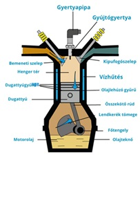

Motorok, 2T vagy 4T
Elsősorban a motorokról:
A motorokat Nikolaus Otto találta fel 1876-ban, forradalmasítva ezzel a közlekedést és az ipart. Otto belső égésű motorja alapjaiban változtatta meg a
gépek működését, lehetővé téve az autók és más járművek széles körű elterjedését. Érdekesség, hogy Otto találmánya nélkül a modern világ technológiai fejlődése sokkal lassabb ütemben haladt volna.
Motorok használatának előnyei
- Költséghatékonyság: A motorbiciklik kevesebb üzemanyagot fogyasztanak, mint az autók, és alacsonyabb a karbantartási költségük is.
- Parkolási lehetőségek: Könnyebb parkolni velük, mivel kevesebb helyet foglalnak el, és gyakran speciális parkolóhelyek is rendelkezésre állnak számukra.
- Rugalmasság: A motorbiciklikkel könnyebb közlekedni a forgalomban, mivel kisebbek és mozgékonyabbak.
- Időmegtakarítás: A forgalmi dugók könnyebben elkerülhetők motorbiciklivel, így időt takaríthatunk meg a közlekedés során.
- Környezetbarát: Alacsonyabb üzemanyag-fogyasztásuk miatt kevesebb szén-dioxidot bocsátanak ki, mint az autók.
- Adrenalin és élvezet: Sok motoros számára a motorozás izgalmas és élvezetes hobbi, amely kikapcsolódást nyújt.
- Hozzáférhetőség: Olyan helyekre is eljuthatunk velük, ahová autóval nehezebb vagy lehetetlen bejutni, például szűk utcákba vagy hegyi ösvényekre.
Motorok használatának hátrányai
- Biztonság: A motorbiciklik vezetése veszélyesebb, mint az autóké, mert a motorosokat kevésbé védi a jármű szerkezete.
- Időjárási körülmények: A motorosokat közvetlenül érintik az időjárási viszonyok, például az eső, a szél és a hideg.
- Tárolás: Nehezebb biztonságos helyet találni a motorbicikli tárolására, különösen, ha nincs garázs.
- Terhelhetőség: A motorbiciklik kevesebb csomagot és utast tudnak szállítani, mint az autók.
- Fizikai megterhelés: Hosszabb távokon a motorozás fizikailag megterhelő lehet, különösen a testtartás miatt.
- Baleset utáni költségek: Egy baleset esetén a motorbiciklik javítása gyakran költségesebb lehet, és a motorosok nagyobb valószínűséggel szenvednek súlyos sérüléseket.
- Szabályozások: Számos városban és országban szigorúbb szabályok és korlátozások vonatkoznak a motorbiciklik használatára, például zajkorlátozások és sebességkorlátozások.

|
 |
|---|
{kind=link}